DAS-PROM ERP je sistem u kojem staklara vodi svaki posao na jednom mjestu: od prvog poziva kupca, preko mjerenja i ponude, kroz sve stanice u pogonu (rezanje, brušenje, kaljenje, pjeskarenje, farbanje, laminiranje, IZO staklo), do isporuke ili montaže kod kupca. Umjesto Excel tabela koje svako drži kod sebe, svi vide istu, najnoviju sliku: šta je naručeno, dokle je staklo stiglo, gdje je zastoj i ko ide na teren.
Središte sistema je radni nalog. Svaki nalog je vezan za kupca i za ponudu iz koje je nastao, i zna kroz koje stanice staklo prolazi. Ne prolazi svako staklo kroz sve stanice: ogledalo ide samo na rezanje i brušenje, a kaljena ograda i na kaljenje. Ta lista stanica zove se ruta i sistem je sam izvodi iz obrada koje su upisane u ponudi.
Aplikacija radi u web-browseru (Chrome, Edge, Firefox, Safari), na računaru, tabletu i telefonu. Ne instalira se ništa. Na telefonu se meni sažima, a tabele se pretvaraju u pregledne kartice (vidi poglavlje 12).
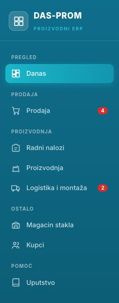
Svaki ekran ima isti okvir. Lijevo je bočni meni, gore traka sa naslovom, a u sredini sadržaj.
Bočni meni je podijeljen po poslu:
Crveni broj pored stavke menija znači da tu nešto čeka na vas: kod Prodaje broj novih upita na koje se još niko nije javio, a kod Logistike broj gotovih naloga kojima još nije zakazan termin isporuke.
Traka sa naslovom pokazuje gdje ste (npr. „RN-1040" i naziv posla). Iznad sadržaja je i putanja (npr. Logistika → RN-1035): klik na prvi dio vraća vas tamo odakle ste došli.
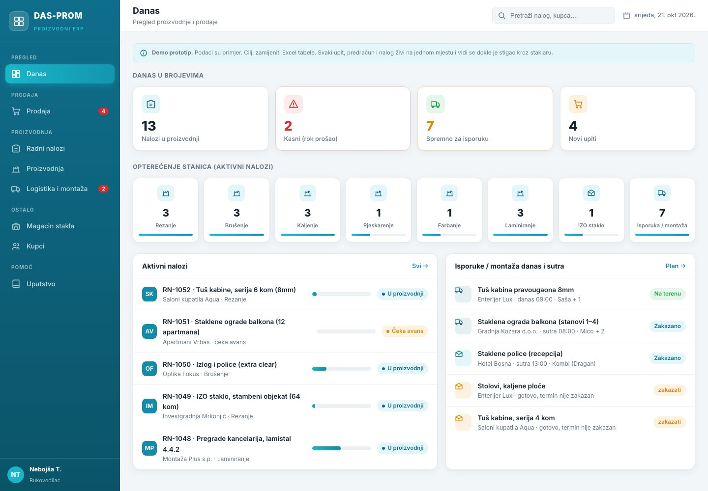
Ovo je ekran za jutarnji pregled. Odgovara na pitanje „šta se danas dešava i gdje gori".
Četiri kartice: nalozi u proizvodnji, nalozi koji kasne (rok je prošao, crveno), spremno za isporuku i novi upiti. Klik na karticu otvara listu sa tačno tim nalozima ili upitima.
Za svaku stanicu u pogonu vidi se koliko naloga trenutno stoji na njoj, a traka pokazuje koliko je stanica zauzeta. Tako se odmah vidi usko grlo, npr. ako se nalozi gomilaju na kaljenju. Klik na stanicu otvara Radne naloge filtrirane na naloge koji su upravo na toj stanici (vidi 7.1).
Prodaja prati svaki posao od prvog javljanja kupca do prihvaćene ponude. Svaki upit prolazi kroz iste korake:
Ekran Prodaja ima tri kartice: Pregled toka, Upiti i ponude i Cjenovnik.
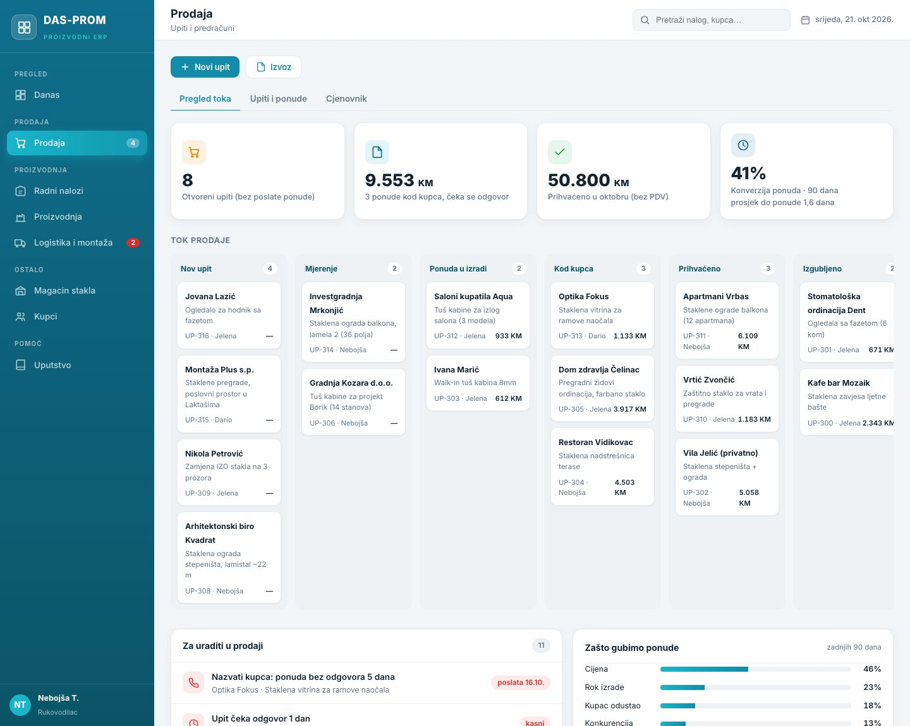
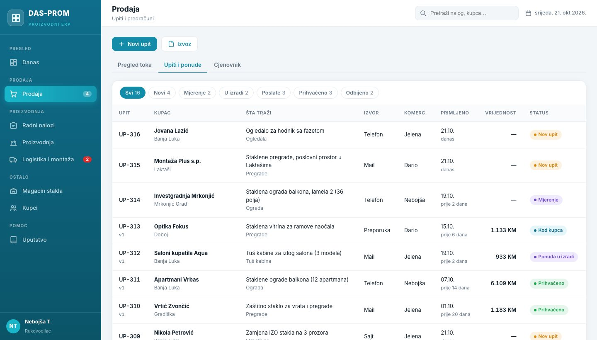
Svi upiti u tabeli. Dugmad iznad tabele (Novi, Mjerenje, U izradi, Poslate, Prihvaćeno, Odbijeno) filtriraju listu, a broj na dugmetu kaže koliko ih je. Klik na red otvara upit.
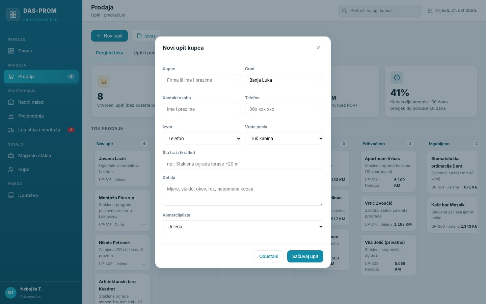
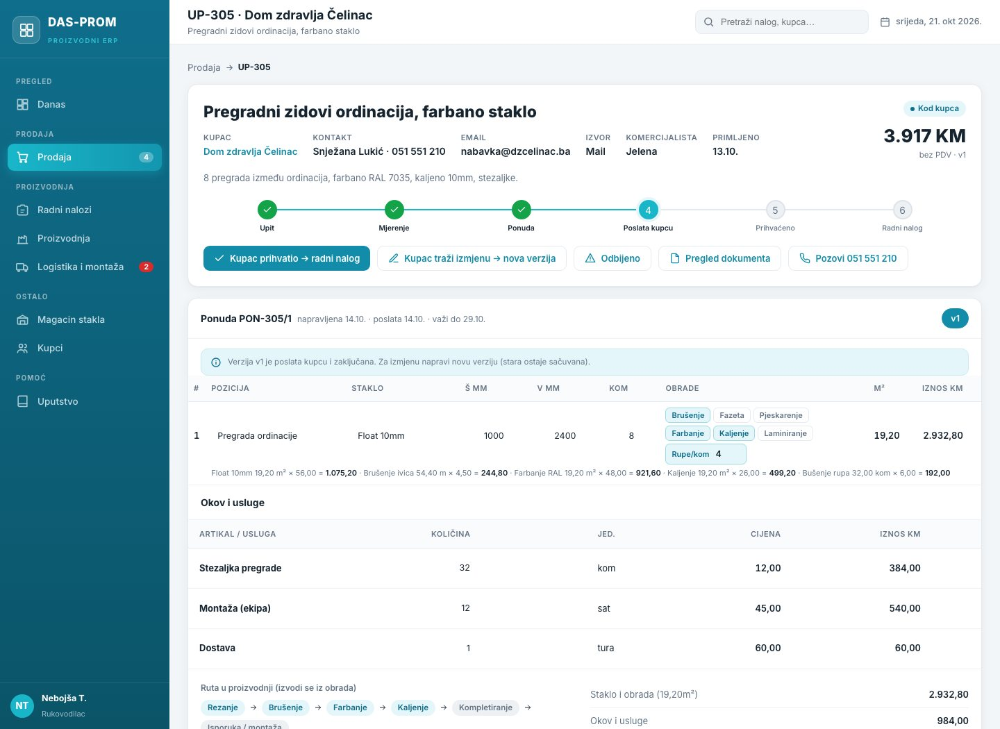
Gore su podaci o kupcu i vrijednost ponude, a ispod toga koraci (Upit, Mjerenje, Ponuda, Poslata kupcu, Prihvaćeno, Radni nalog): zeleno je urađeno, plavo je trenutni korak. Dugmad ispod koraka uvijek nude samo ono što ima smisla u tom koraku:
| Korak | Šta nudi |
|---|---|
| Nov upit | Zakaži mjerenje (datum, vrijeme, ekipa) ili Napravi ponudu bez mjerenja |
| Mjerenje | Mjerenje urađeno, napravi ponudu ili Pomjeri termin |
| Ponuda u izradi | Pošalji ponudu kupcu |
| Kod kupca | Kupac prihvatio → radni nalog, Kupac traži izmjenu → nova verzija ili Odbijeno |
| Prihvaćeno | Otvori radni nalog |
Na dnu su Aktivnosti (svaki poziv, mail, mjerenje i verzija ponude, sa datumom i imenom) i Detalji sa dokumentima (skice, fotografije, tlocrti). U polje Dodaj bilješku upišite dogovor sa kupcem, npr. „zove ponovo u petak".
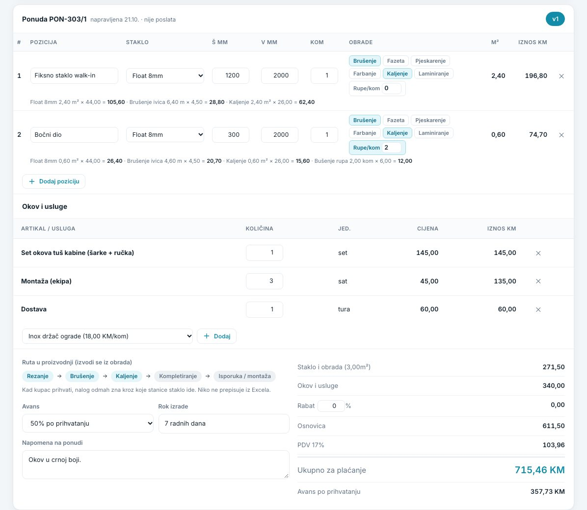
Ponuda se pravi na stranici upita, u bloku Ponuda. Sve se računa samo, dok kucate.
Ispod stakla se dodaju okov (držači, rukohvati, profili, set za tuš kabinu) i usluge (montaža po satu, dostava). Izaberite stavku iz liste, kliknite + Dodaj i upišite količinu.
Svaka ponuda ima verziju (v1, v2…). Kad se verzija pošalje kupcu, zaključava se i više se ne može mijenjati, da uvijek znate šta je kupac tačno dobio. Ako kupac traži izmjenu (popust, drugo staklo), kliknite Kupac traži izmjenu → nova verzija: sistem kopira zadnju verziju u novu, koju slobodno mijenjate. Stare verzije ostaju za pregled (dugmad v1, v2 desno gore u bloku ponude).
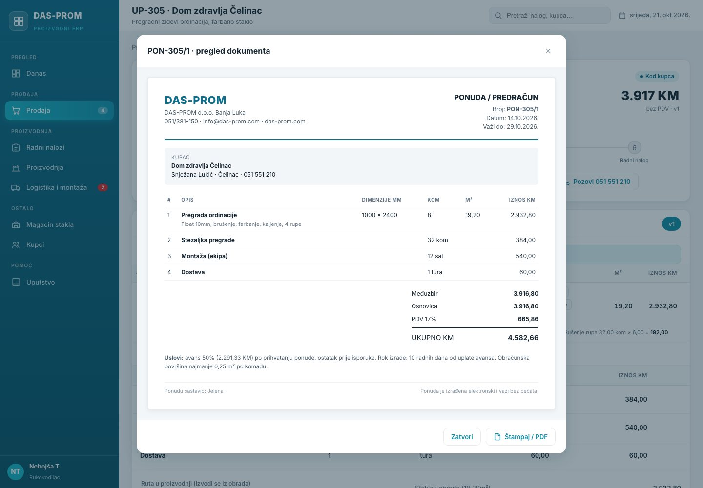
Pregled dokumenta pokazuje ponudu onako kako je kupac vidi: zaglavlje firme, kupac, pozicije, okov i usluge, obračun sa PDV-om, uslovi i rok važenja. Dugme Štampaj / PDF je štampa ili čuva kao PDF. Pošalji ponudu kupcu otvara mail sa ponudom u prilogu i bilježi slanje u aktivnosti.
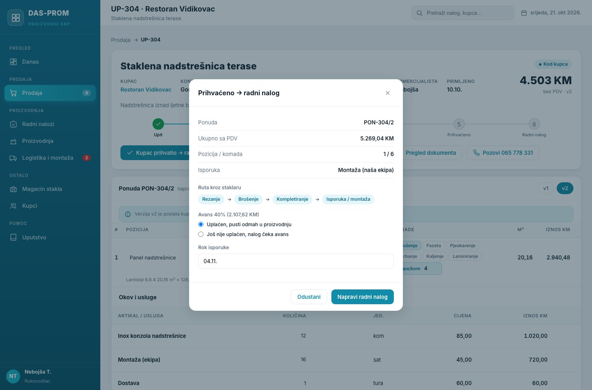
Sistem odmah pravi radni nalog sa stavkama iz ponude i rutom kroz stanice. Ako je avans uplaćen (ili ga nema), nalog ide pravo u proizvodnju. Ako nije, nalog dobija status Čeka avans i ne ide u pogon dok neko ne klikne Avans uplaćen, pusti u proizvodnju na nalogu.
Klik na Odbijeno traži razlog (cijena, rok izrade, kupac odustao, konkurencija). Razlozi se skupljaju u „Zašto gubimo ponude" na Pregledu toka.
Mjerenje se zakazuje sa upita (datum, vrijeme, ekipa) i automatski se pojavljuje u rasporedu izlazaka u Logistici, zajedno sa isporukama i montažama, jer iste ekipe idu i na mjerenja.
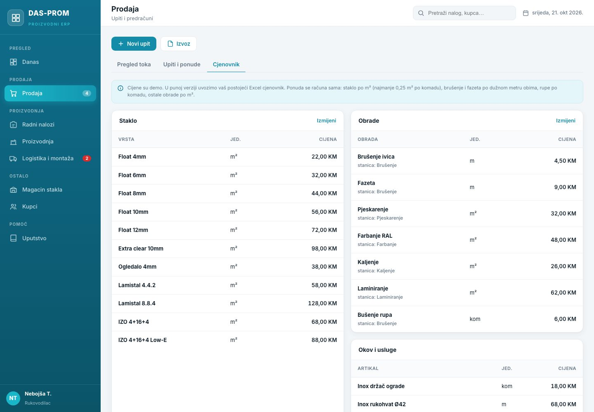
Kartica Cjenovnik sadrži sve cijene iz kojih se računaju ponude: vrste stakla po m², obrade (uz svaku piše na koju stanicu u pogonu ide) i okov i usluge. Kad se cijena promijeni ovdje, sve nove ponude je koriste. Već poslate ponude ostaju sa starom cijenom.
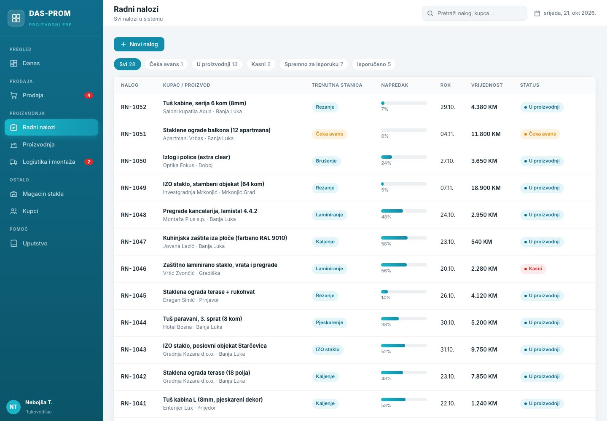
Lista svih naloga. Za svaki se vidi kupac, proizvod, trenutna stanica, napredak u procentima, rok, vrijednost i status. Dugmad iznad liste filtriraju po statusu:
| Status | Značenje |
|---|---|
| Čeka avans | Ponuda prihvaćena, ali avans nije uplaćen; nalog još ne ide u pogon. |
| U proizvodnji | Staklo je u pogonu, na nekoj od stanica. |
| Kasni | Rok je prošao, a nalog nije gotov. |
| Spremno za isporuku | Sve stanice završene, staklo kompletirano; posao prelazi u Logistiku. |
| Isporučeno | Isporučeno ili montirano kod kupca; nalog je zatvoren i ide na fakturisanje. |
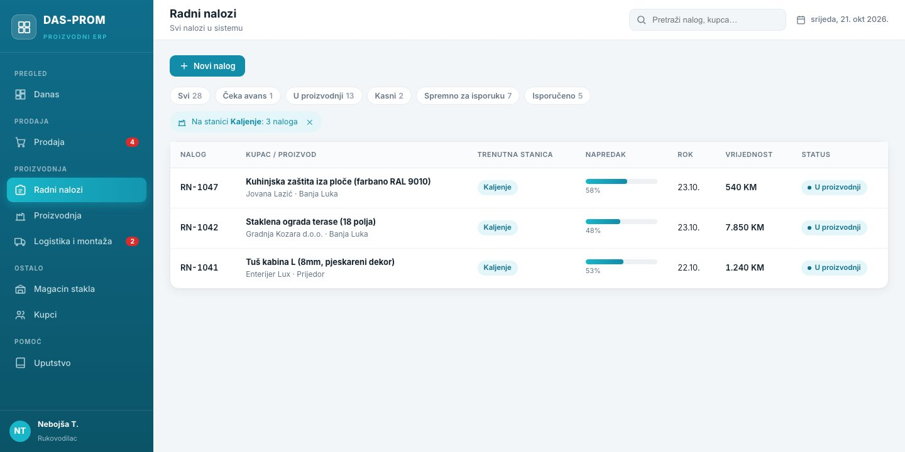
Kad na ekranu Danas kliknete stanicu u „Opterećenje stanica", ovdje se prikažu samo nalozi koji su upravo na njoj. Iznad liste piše npr. „Na stanici Kaljenje: 3 naloga", a ✕ uklanja filter.
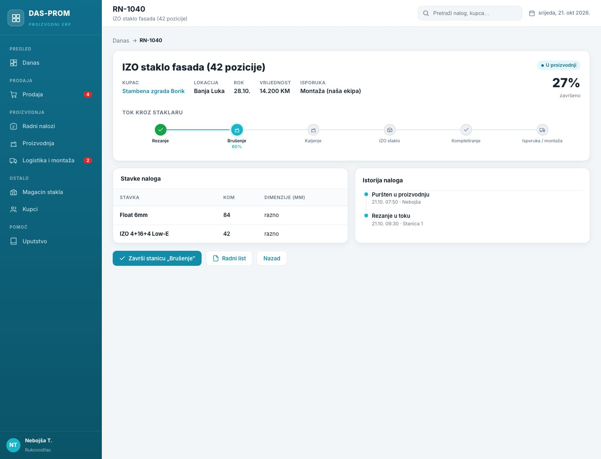
Dugme Završi stanicu „…" pomjera nalog na sljedeću stanicu i upisuje to u istoriju. Kad se završi i zadnja stanica, nalog postaje Spremno za isporuku i pojavljuje se u Logistici. Radni list je štampani list koji ide uz staklo kroz pogon.
Za hitne ili interne poslove nalog se može otvoriti direktno: + Novi nalog u listi naloga, izbor kupca, proizvoda i stanica kroz koje staklo ide, pa Pusti u proizvodnju. Uobičajen put je ipak preko ponude (poglavlje 6), jer tada nalog nosi cijenu, stavke i rutu bez prepisivanja.
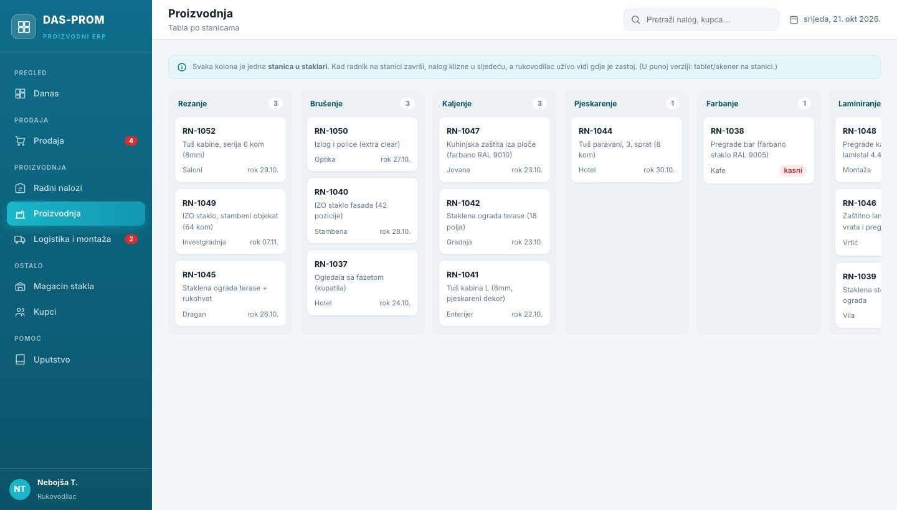
Pogled za šefa proizvodnje. Svaka kolona je jedna stanica (Rezanje, Brušenje, Kaljenje, Pjeskarenje, Farbanje, Laminiranje, IZO staklo), a kartice su nalozi koji su trenutno na njoj, sa kupcem i rokom. Nalog koji kasni ima crvenu oznaku. Kad se stanica završi, kartica „klizne" u sljedeću kolonu. Klik na karticu otvara nalog.
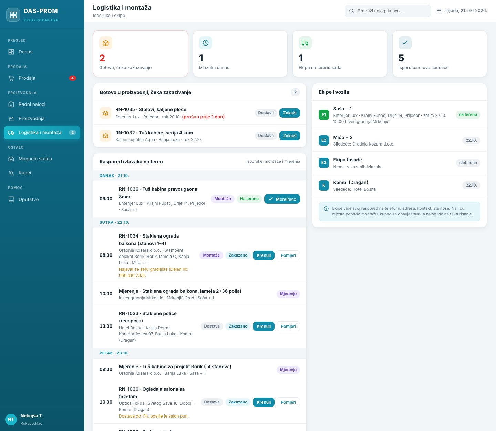
Ovdje su samo nalozi završeni u proizvodnji. Svaki prolazi kroz četiri koraka:
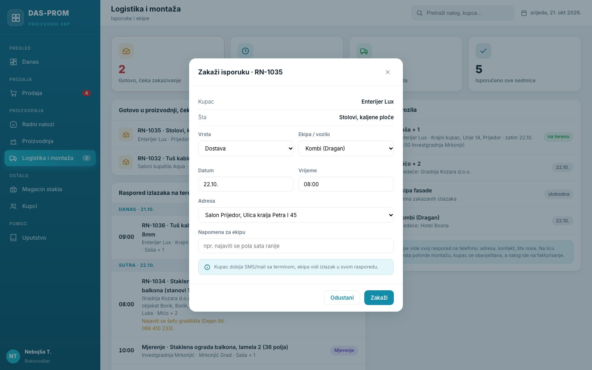
Raspored po danima (Danas, Sutra, pa dani u sedmici) sa svim izlascima na teren: isporuke, montaže i mjerenja iz prodaje, jer iste ekipe rade sve troje. Za svaki izlazak se vidi vrijeme, nalog, kupac, adresa, ekipa i napomena (narandžasto). Dugmad:
Za svaku ekipu i vozilo piše šta trenutno radi: na terenu (i kod koga), danas u …, sljedeći zakazani izlazak ili slobodna. Računa se iz rasporeda, pa je uvijek tačno.
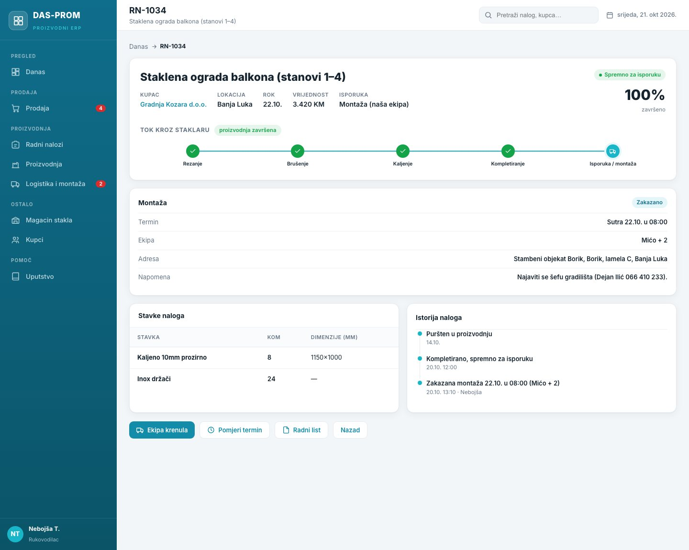
Kad otvorite nalog koji je gotov, sve stanice su zelene uz oznaku proizvodnja završena, a ispod je kartica Isporuka ili Montaža sa terminom, ekipom, adresom i napomenom. Dugmad su logistička (Zakaži, Ekipa krenula, Pomjeri termin, Montirano). Dugme Nazad vraća u Logistiku.
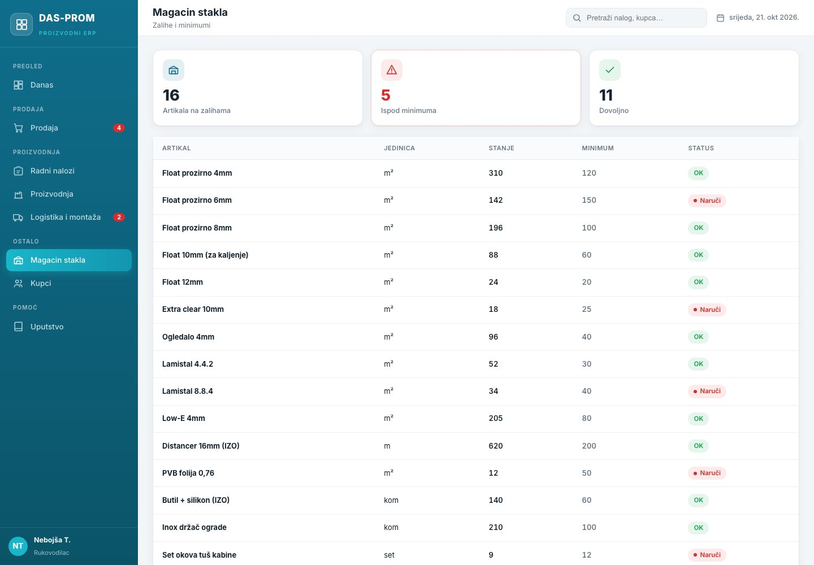
Zalihe stakla i potrošnog materijala: float, extra clear, ogledalo, lamistal, Low-E, PVB folija, distanceri i materijal za IZO, okov i profili. Za svaki artikal piše stanje i minimum. Kad stanje padne ispod minimuma, artikal dobija crvenu oznaku Naruči, a broj takvih artikala je u kartici „Ispod minimuma".
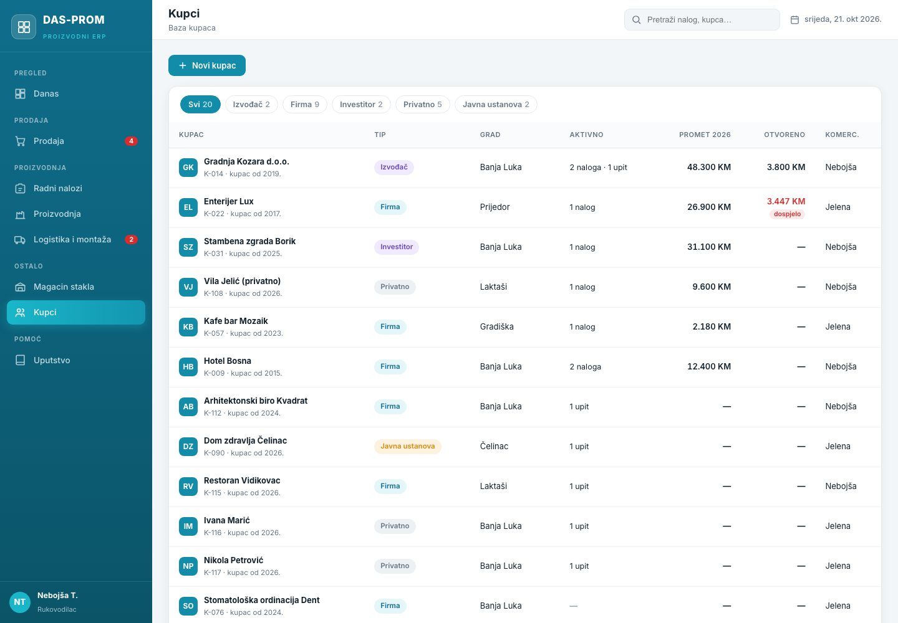
Svi kupci na jednom mjestu. Filter po tipu: firma, privatno, izvođač, investitor, javna ustanova. Za svakog se vidi grad, šta je trenutno aktivno (nalozi, upiti), promet ove godine, otvoreni dug (crveno i oznaka dospjelo ako kasni) i komercijalista. Novi kupac se dodaje dugmetom + Novi kupac.
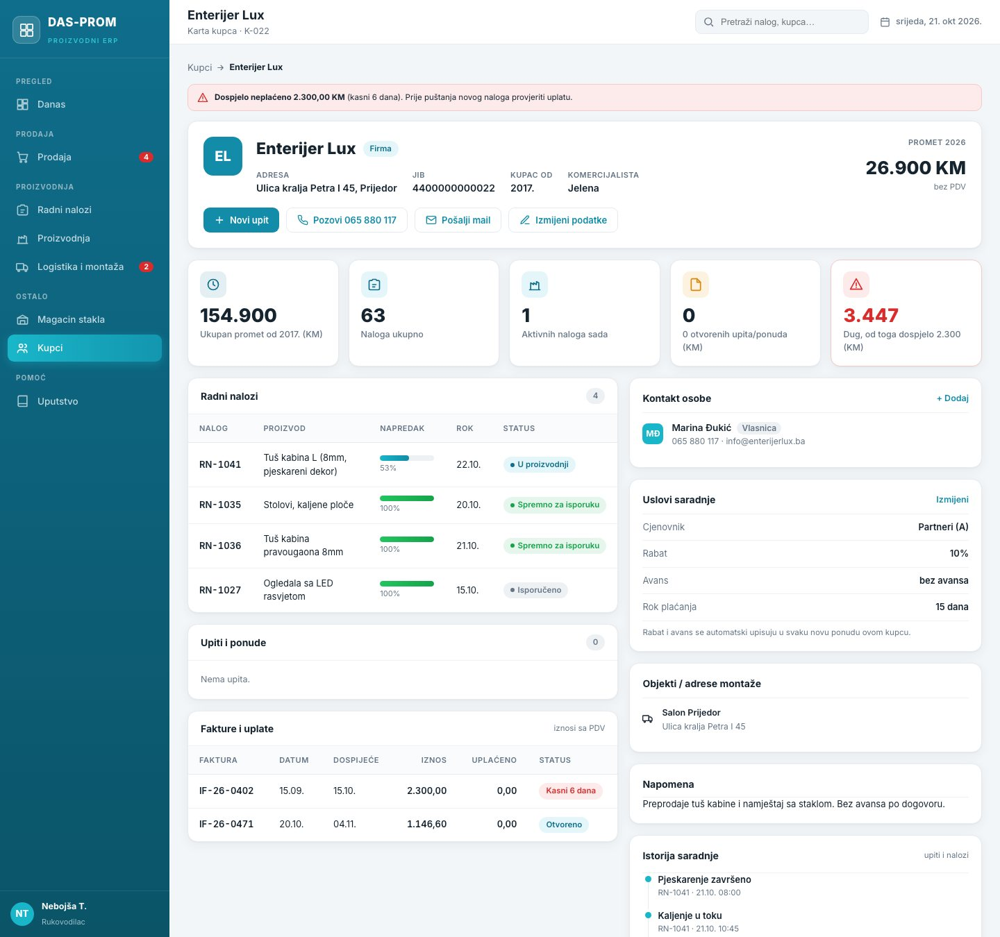
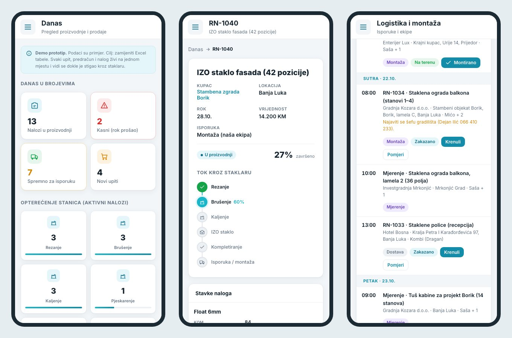
Sve funkcije rade i na telefonu, što je zgodno za komercijaliste na terenu i za ekipe za montažu.
Primjer: kupac zove za tuš kabinu.
| Ko | Šta radi u sistemu | Gdje |
|---|---|---|
| Komercijalista | Upisuje upit i zakazuje mjerenje. | Prodaja → + Novi upit |
| Ekipa | Mjeri na terenu; termin vidi u rasporedu. | Logistika → Raspored |
| Komercijalista | Pravi ponudu (staklo, obrade, okov, montaža), pregleda dokument i šalje. | Upit → Ponuda |
| Komercijalista | Kupac traži popust: nova verzija sa rabatom, ponovo slanje. | Upit → nova verzija |
| Komercijalista | Kupac prihvata i uplaćuje avans: pravi radni nalog. | Upit → Kupac prihvatio |
| Pogon | Rezanje, brušenje, kaljenje: svaka stanica završava svoj dio. | Proizvodnja / nalog |
| Logistika | Nalog je gotov: zakazuje montažu, ekipi piše napomenu. | Logistika → Zakaži |
| Ekipa | „Krenuli", montaža, „Montirano" i ko je primio. | Logistika → Raspored |
| Knjigovodstvo | Nalog zatvoren, faktura; uplata se vidi na karti kupca. | Kupci → karta kupca |
U svakom trenutku svako vidi isto: komercijalista zna dokle je staklo stiglo kad kupac nazove, šef proizvodnje vidi gdje je zastoj, a logistika zna šta je gotovo i čeka termin.
Kupac zove i pita dokle je njegova narudžba. Gdje gledam?
Otvorite kartu kupca (Kupci → klik na kupca) i u bloku Radni nalozi vidite napredak svakog naloga. Klik na nalog pokazuje tačno na kojoj je stanici i šta slijedi.
Ponuda je poslata, a kupac traži drugačiju cijenu. Da li mijenjam postojeću?
Ne. Poslata verzija je zaključana. Kliknite „Kupac traži izmjenu → nova verzija" i mijenjajte novu. Obje verzije ostaju sačuvane.
Zašto nalog ne ide u proizvodnju iako je ponuda prihvaćena?
Vjerovatno ima status „Čeka avans". Kad avans stigne, na nalogu kliknite „Avans uplaćen, pusti u proizvodnju".
Zašto staklo ne ide kroz sve stanice?
Ruta se pravi iz obrada u ponudi. Ako ogledalo nema kaljenje u ponudi, nema ni stanicu kaljenja u nalogu. Tako pogon ne gubi vrijeme na nepotrebne korake.
Nalog je gotov, a ne vidim ga u Proizvodnji.
Tako i treba. Gotovi nalozi prelaze u Logistiku, u blok „Gotovo u proizvodnji, čeka zakazivanje".
Kako znam da ekipa nije zauzeta kad zakazujem montažu?
Pogledajte „Ekipe i vozila" i raspored po danima u Logistici. Tu su i mjerenja iz prodaje, pa se vidi cijeli dan ekipe.
Šta znači crveni broj u meniju?
Kod Prodaje: novi upiti na koje se niko nije javio. Kod Logistike: gotovi nalozi bez zakazanog termina.
Kupac duguje. Da li sistem blokira novi posao?
Ne blokira, ali jasno upozorava na karti kupca i pri prihvatanju ponude. Odluka je na vama.
| Pojam | Značenje |
|---|---|
| Upit | Prvo javljanje kupca: šta treba, kontakt i opis. Od upita počinje svaki posao. |
| Ponuda (predračun) | Obračun posla za kupca: pozicije stakla, obrade, okov, usluge, rabat, PDV i avans. Ima verzije. |
| Verzija ponude | v1, v2…; poslata verzija je zaključana, izmjena ide kroz novu verziju. |
| Radni nalog (RN) | Posao u pogonu, nastao iz prihvaćene ponude; nosi stavke, rok i rutu. |
| Stanica | Mjesto u pogonu gdje se radi jedna obrada: rezanje, brušenje, kaljenje, pjeskarenje, farbanje, laminiranje, IZO, kompletiranje, isporuka/montaža. |
| Ruta | Stanice kroz koje prolazi jedan nalog, redom; izvodi se iz obrada u ponudi. |
| Obračunska površina | Površina za cijenu: stvarna površina, ali najmanje 0,25 m² po komadu. |
| Avans | Dio iznosa koji kupac plaća unaprijed; dok nije uplaćen, nalog „Čeka avans". |
| Izlazak (na teren) | Isporuka, montaža ili mjerenje kod kupca; svi su u jednom rasporedu ekipa. |
| Karta kupca | Sve o kupcu na jednom ekranu: podaci, nalozi, ponude, fakture, dug, kontakti, uslovi, objekti. |
| Uslovi saradnje | Cjenovnik, rabat, avans i rok plaćanja dogovoreni sa kupcem; automatski se primjenjuju na nove ponude. |
| Minimum zalihe | Količina ispod koje artikal u magacinu treba naručiti. |